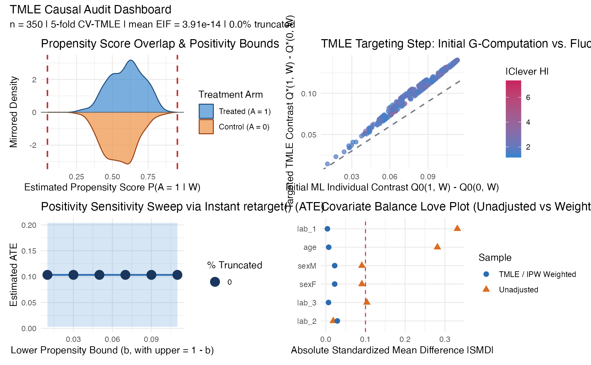

tidytmle brings cross-fitted Targeted Maximum Likelihood
Estimation (CV-TMLE) into the tidymodels ecosystem as a
semi-parametric causal orchestrator sitting above
workflows, workflowsets, recipes,
rsample, hardhat, and
yardstick.
If you are new to the theory behind TMLE, start with TMLE Intuition: A Step-by-Step Visual Guide for an accessible breakdown of the Predict, Then Target philosophy, Clever Covariates, and double robustness.
Level 1: The 3-Line Safe Default
At Level 1, pass outcome, treatment,
covariates (via tidyselect), and one or more
causal estimands to tmle_spec(), then call
fit(). Ten-fold cross-fitting, an ensemble Super Learner
library (glm, glmnet, ranger),
adaptive positivity bounds, and bounded canonical logistic fluctuation
are enabled automatically:
library(tidytmle)
cohort <- sim_causal_cohort(n = 350, outcome_type = "binary", seed = 42)
truth <- attr(cohort, "truth")
fit <- tmle_spec(
outcome = y,
treatment = a,
covariates = c(age, sex, starts_with("lab_")),
estimand = c("ate", "rr", "or")
) |>
set_resamples(v_folds = 5L) |>
fit(data = cohort)
fit
#>
#> ── TMLE Fit Summary ──
#>
#> n = 350 (observed = 350) | 5-fold CV-TMLE | logistic fluctuation |
#> 2.16s
#>
#> ── Causal Estimates
#> ATE est = 0.1034 (SE = 0.0512) 95% CI [0.0031, 0.2038] p = 0.0434
#> RR est = 1.3153 (log-SE = 0.1423) 95% CI [0.9951, 1.7384] p = 0.0541
#> OR est = 1.5546 (log-SE = 0.2231) 95% CI [1.0039, 2.4074] p = 0.0480
#>
#> ── Nuisance Super Learners
#> Q Super Learner: AUC = 0.717 (weights: glmnet 1.00)
#> g Super Learner: AUC = 0.625 (weights: glm 0.61, ranger 0.39)
#>
#> ── Diagnostics & Targeting Shift
#> Targeting shift (TMLE - plug-in): +0.0219 (epsilon = 0.0556)
#> ✔ All checks healthy: mean EIF = 3.91e-14, truncated = 0.0%, max EIF leverage = 4.4%.
summary(fit)
#>
#> ── Plain-English TMLE Summary ──
#>
#> Sample: 350 rows (350 observed outcomes) | 5-fold CV-TMLE
#>
#> ── 1. What the Causal Estimates Mean
#> ℹ ATE (across the full population): Treatment increases the expected outcome by 0.1034 units (95% CI [0.0031, 0.2038], p = 0.0434).
#> ℹ RR: Treatment corresponds to a 1.32x risk ratio (31.5% higher risk; 95% CI [1.00, 1.74], p = 0.0541).
#> ℹ OR: Treatment corresponds to an odds ratio of 1.55 (95% CI [1.00, 2.41], p = 0.0480).
#>
#> ── 2. What the Targeting Step Did
#> Fluctuating along the Clever Covariate shifted the initial ML plug-in
#> estimate by +0.0219 (epsilon = 0.0556) to remove residual confounding
#> bias.
#>
#> ── 3. Statistical Health Check & Next Steps
#> ✔ Convergence: EIF estimating equation solved (mean EIF = 3.91e-14).
#> ✔ Positivity: 0.0% clipped at g_bounds [0.046, 0.954] (ESS: treated = 190.8, control = 134.6).
#> ✔ Influence: No single observation dominates variance (max EIF leverage = 4.4%).Joint EIF Inference & Tidymodels S3 Verbs
Standard tidymodels S3 verbs extract every layer of the
fitted pipeline without digging through nested lists.
-
summary(fit)/explain_tmle(fit): Plain-English causal interpretation, targeting shift summary, and traffic-light health audit with actionable next steps. -
tidy(fit): Returns point estimates, influence-function standard errors, and 95% confidence intervals (on the log scale and exponentiated for ratio estimands"rr"and"or"). Settingsimultaneous = TRUEapplies a fast wild multiplier bootstrap across the joint EIF matrix so multiple estimands retain simultaneous 95% coverage;e_value = TRUEcomputes VanderWeele-Ding sensitivity bounds for unmeasured confounding. -
glance(fit): One-row causal health check—verify thatmean_eifis near zero (< 1e-4), inspectplugin_vs_tmle_shift(how much the targeting step adjusted the initial ML fit), and check positivity truncation (pct_truncated,ess_treated,ess_control). -
collect_metrics(fit)&extract_sl_weights(fit): Inspect out-of-foldyardstickCV performance and simplex Super Learner metalearner weights across base learners.
# Causal inference table with optional simultaneous uniform bands and E-values
tidy(fit, simultaneous = TRUE, e_value = TRUE)
#> # A tibble: 3 × 11
#> estimand term estimate std.error statistic p.value conf.low
#> <chr> <chr> <dbl> <dbl> <dbl> <dbl> <dbl>
#> 1 ate ATE 0.103 0.0512 2.02 0.0434 -0.00254
#> 2 rr RR 1.32 0.142 1.93 0.0541 0.980
#> 3 or OR 1.55 0.223 1.98 0.0480 0.980
#> # ℹ 4 more variables: conf.high <dbl>, e_value <dbl>,
#> # e_value_ci <dbl>, crit.value <dbl>
# One-row causal health check
glance(fit)
#> # A tibble: 1 × 19
#> n n_observed n_clusters v_folds cv_tmle epsilon mean_eif
#> <int> <int> <int> <int> <lgl> <dbl> <dbl>
#> 1 350 350 NA 5 TRUE 0.0556 3.91e-14
#> # ℹ 12 more variables: plugin_vs_tmle_shift <dbl>, g_min <dbl>,
#> # g_max <dbl>, g_bound_low <dbl>, g_bound_high <dbl>,
#> # pct_truncated <dbl>, ess_treated <dbl>, ess_control <dbl>,
#> # max_eif_leverage <dbl>, q_metric <dbl>, g_auc <dbl>,
#> # g_log_loss <dbl>
# Cross-validated nuisance metrics (yardstick) and Super Learner weights
collect_metrics(fit)
#> # A tibble: 24 × 7
#> nuisance learner .metric .estimator mean n std_err
#> <chr> <chr> <chr> <chr> <dbl> <int> <dbl>
#> 1 Q SuperLearner brier_class binary 0.208 5 0.0105
#> 2 Q SuperLearner mn_log_loss binary 0.601 5 0.0238
#> 3 Q SuperLearner roc_auc binary 0.717 5 0.0301
#> 4 Q glm brier_class binary 0.208 5 0.0115
#> 5 Q glm mn_log_loss binary 0.603 5 0.0266
#> 6 Q glm roc_auc binary 0.713 5 0.0306
#> 7 Q glmnet brier_class binary 0.208 5 0.0105
#> 8 Q glmnet mn_log_loss binary 0.601 5 0.0238
#> 9 Q glmnet roc_auc binary 0.717 5 0.0301
#> 10 Q ranger brier_class binary 0.224 5 0.00868
#> # ℹ 14 more rows
extract_sl_weights(fit)
#> # A tibble: 6 × 3
#> nuisance learner weight
#> <chr> <chr> <dbl>
#> 1 Q glm 0
#> 2 Q glmnet 1
#> 3 Q ranger 0
#> 4 g glm 0.606
#> 5 g glmnet 0
#> 6 g ranger 0.394Observation-level counterfactual predictions (.q0_init,
.q1_init, .q0_star, .q1_star),
truncated propensity scores (.g_trunc), clever covariates
(.clever_h), and Efficient Influence Function leverage
(.eif_leverage) are returned by augment():
head(augment(fit)[, c("age", "a", "y", ".q0_star", ".q1_star", ".g_trunc", ".eif_leverage")])
#> # A tibble: 6 × 7
#> age a y .q0_star .q1_star .g_trunc .eif_leverage
#> <dbl> <int> <int> <dbl> <dbl> <dbl> <dbl>
#> 1 71.5 1 0 0.509 0.638 0.567 0.00377
#> 2 48.2 0 0 0.144 0.212 0.729 0.000768
#> 3 59.4 1 1 0.415 0.531 0.692 0.00149
#> 4 62.6 0 0 0.500 0.604 0.548 0.00383
#> 5 59.9 1 1 0.118 0.185 0.777 0.00320
#> 6 53.7 1 0 0.114 0.185 0.789 0.000223Instant retarget() Without ML Refitting
Because cross-fitted out-of-fold nuisance predictions
(,
,
)
are cached inside the tmle_fit object, you can test
stricter positivity bounds, switch estimands ("att",
"atc"), or target subgroups in milliseconds without
refitting any machine learning models:
fit_strict <- retarget(fit, g_bounds = c(0.05, 0.95))
fit_att <- retarget(fit, estimand = "att")
fit_older <- retarget(fit, subgroup = age >= 55)
dplyr::bind_rows(
dplyr::mutate(tidy(fit), scenario = "Adaptive bounds (All)"),
dplyr::mutate(tidy(fit_strict), scenario = "Strict bounds [0.05, 0.95]"),
dplyr::mutate(tidy(fit_att), scenario = "ATT"),
dplyr::mutate(tidy(fit_older), scenario = "Subgroup age >= 55")
) |>
dplyr::select(scenario, estimand, estimate, std.error, conf.low, conf.high)
#> # A tibble: 10 × 6
#> scenario estimand estimate std.error conf.low conf.high
#> <chr> <chr> <dbl> <dbl> <dbl> <dbl>
#> 1 Adaptive bounds (All) ate 0.103 0.0512 0.00307 0.204
#> 2 Adaptive bounds (All) rr 1.32 0.142 0.995 1.74
#> 3 Adaptive bounds (All) or 1.55 0.223 1.00 2.41
#> 4 Strict bounds [0.05,… ate 0.103 0.0512 0.00307 0.204
#> 5 Strict bounds [0.05,… rr 1.32 0.142 0.995 1.74
#> 6 Strict bounds [0.05,… or 1.55 0.223 1.00 2.41
#> 7 ATT att 0.115 0.0544 0.00807 0.221
#> 8 Subgroup age >= 55 ate 0.201 0.0797 0.0449 0.357
#> 9 Subgroup age >= 55 rr 1.53 0.189 1.06 2.22
#> 10 Subgroup age >= 55 or 2.26 0.335 1.17 4.37Visual Causal Diagnostics (autoplot())
Inspect propensity overlap (checking positivity across arms), how
strongly the fluctuation step shifted individual predictions
("targeting"), and positivity truncation stability across
bounds ("sensitivity"). If patchwork is
installed, autoplot(fit, type = "dashboard") combines all
key checks into a single 2×2 visual audit:
